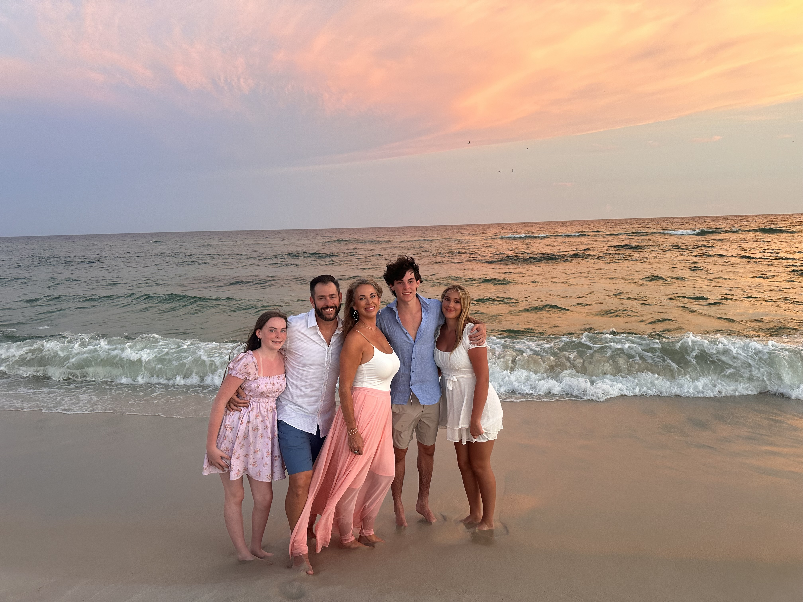

Perdido Key · July 11–18, 2026
A very Perdido prelude

'Twas the night before Perdido, and all through the house,
Every suitcase was zipped tight — not a swimsuit left out.
The stockings were swapped for beach bags with care,
In hopes that the sunscreen soon would be there.
The kids were all buzzing, refusing their beds,
While visions of Pedro's tacos danced in their heads.
And Mama in her flip-flops, and I in my cap,
Had just settled in for a pre-trip power nap —
When out on the porch there arose such a clatter,
I sprang to my phone to check what was the matter.
'Twas the countdown site, glowing bright on the screen,
The VREI ticking up — highest tier ever seen.
More rapid than eagles the group chat replied,
As twenty-five guests coordinated ride after ride.
"Now Aidan! Now cousins! Now Grandpa, don't lag!
On coolers! On floaties! On one more beach bag!"
To the top of Sandy Key, unit six-two-eight,
Where the dock catches sunset and nobody's late.
And then, in a twinkling, I heard through the door,
The Wi-Fi login taped up on the floor.
I straightened my mind, sent one last email away,
Set my out-of-office to "gone, come what may."
The site was all polished, the photo hung right,
"One more Monday between us and this" — pure delight.
A wink of the eye and a nod, "we're all set,"
Not a single logistics loose thread left, and yet —
He sprang to his suitcase, gave one final zip,
And away they all drove on the family road trip.
But I heard him exclaim, as he pulled out of sight,
"Reservation eight-nine-seven-seven — sleep tight!"
Schedule · Gear · Who's Coming